Trigonometry in 3D
Review: Trigonometric Ratios, Sine Rule and Cosine Rule
Before working in three dimensions, it is essential to be confident with the trigonometric tools used in two dimensions. These same tools, applied carefully to the right triangles extracted from a 3D figure, are all that is needed to solve problems in 3D.
Trigonometric Ratios (Right-Angled Triangles)
In any right-angled triangle, for an acute angle θ:
sin θ =
cos θ =
tan θ =
The Sine Rule
Used in any triangle (not just right-angled) when you know: two angles and one side, or two sides and a non-included angle.
where a, b, c are the sides opposite to angles A, B, C respectively.
The Cosine Rule
Used when you know: two sides and the included angle, or all three sides.
Rearranged to find angle A:
Complementary and Supplementary Angles
Complementary angles add up to 90°. If two angles are complementary, sin of one equals cos of the other:
sin θ = cos(90° − θ) and cos θ = sin(90° − θ)
Supplementary angles add up to 180°. If two angles are supplementary:
sin θ = sin(180° − θ) and cos θ = −cos(180° − θ)
3D Figures and Right-Angled Triangles
The key strategy for solving trigonometry problems in three dimensions is to identify and extract right-angled triangles from the 3D figure. Once you have the right triangle, all the familiar 2D tools apply directly.
Strategy for 3D Trigonometry:
1. Sketch the 3D figure clearly, labelling all known lengths and angles.
2. Identify the right-angled triangle(s) that contain the unknown length or angle.
3. Extract that triangle and redraw it as a separate 2D diagram.
4. Apply Pythagoras' theorem, trigonometric ratios, sine rule or cosine rule.
5. Interpret the result in the context of the original 3D figure.
Common 3D Figures and Their Hidden Triangles
The most common 3D figures in examination questions are the cuboid, right pyramid, right cone, and triangular prism. Each contains several right-angled triangles that can be extracted.
The space diagonal of a cuboid (the longest diagonal, running from one corner to the opposite corner through the interior) is found in two steps, each using Pythagoras:
- Step 1: Find the base diagonal BF using the base dimensions: BF² = l² + w².
- Step 2: Use BF as the base of a right-angled triangle with the height h: AG² = BF² + h² = l² + w² + h².
Calculating Lengths and Angles in 3D Figures
The approach is always the same: identify the right-angled triangle that contains the unknown, extract it, label it, and solve. Many problems require two or three consecutive applications of Pythagoras or trigonometry. Use the result of the first triangle as input for the next.
Example 1: Angle of Elevation in a Cuboid
A cuboid has length 8 cm, width 6 cm and height 5 cm. Find the angle that the space diagonal makes with the base of the cuboid.
Step 1: Find the base diagonal:
Look directly at the flat base rectangle ABCF. The base diagonal $BF$ splits it into a right-angled triangle.
BF² = 8² + 6² = 64 + 36 = 100 → BF = 10 cm
Step 2: Extract the right-angled triangle containing the space diagonal:
The internal triangle has a horizontal base BF = 10 cm and a vertical height FG = 5 cm. The space diagonal BG forms the hypotenuse.
Step 3: Apply trigonometry:
The side opposite to angle θ is 5 cm, and the adjacent side is 10 cm.
tan θ = = = 0.5
θ = tan⁻¹(0.5) = 26.6° (to 1 d.p.)
Answer: The space diagonal makes an angle of 26.6° with the base.
Example 2: Height of a Right Pyramid
A right pyramid has a square base of side 10 cm and slant edges of length 13 cm. Find the vertical height of the pyramid.
Step 1: Find the distance from the centre of the base to a corner:
Look at the flat square base ABCD. The diagonal BD passes through center point M. We isolate right-angled triangle BCD to compute its total length.
Total Diagonal BD = √(10² + 10²) = 10√2 cm
Half-diagonal MB = = = 5√2 cm ≈ 7.07 cm
Step 2: Right-angled triangle: apex, centre of base, corner of base:
Isolate the internal vertical cross-section triangle VMB. The vertical side represents the target height (h).
Hypotenuse (VB) = 13 cm, base (MB) = 5√2 cm, vertical side (VM) = h.
h² = 13² − (5√2)² = 169 − 50 = 119
h = √119 = 10.9 cm (to 1 d.p.)
Answer: The vertical height of the pyramid is 10.9 cm.
Example 3: Angle in a Triangular Prism
The cross-section of a triangular prism is a right-angled triangle with a base of 6 cm and a vertical height of 8 cm. The total length of the prism is 12 cm. Calculate the angle between the diagonal of the longest rectangular face and the 12 cm base edge.
Step 1: Find the hypotenuse of the triangular face:
Look at the front vertical triangular cross-section face. It forms a right-angled triangle with a base of 6 cm and a height of 8 cm.
Hypotenuse = √(6² + 8²) = √(36 + 64) = √100 = 10 cm
Step 2: Isolate the right-angled triangle on the slant face:
The slant rectangular face has a base width of 12 cm (length of the prism) and an orthogonal height of 10 cm (the hypotenuse we found in Step 1). The required angle θ sits at the base corner.
Face diagonal = √(12² + 10²) = √(144 + 100) = √244 ≈ 15.6 cm
Step 3: Find the required angle:
The side opposite to angle θ is 10 cm, and the adjacent side is 12 cm.
tan θ = → θ = tan¹ = 39.8° (to 1 d.p.)
Answer: The face diagonal makes an angle of 39.8° with the base edge.
Exam Tips For Working in 3D:
• Always draw and label the 3D figure first, even if a diagram is given.
• Extract each right-angled triangle as a separate, clearly labelled 2D diagram.
• Do not round intermediate answers; carry full calculator values through to the final step, then round.
• If two sides and a non-right angle are involved, check whether sine rule or cosine rule applies.
The Unit Circle
The unit circle is a circle of radius 1 centred at the origin. It is the foundation for defining the trigonometric functions for angles beyond 0° to 90°. A point P on the unit circle at angle θ (measured anticlockwise from the positive x-axis) has coordinates:
This means the x-coordinate of any point on the unit circle gives cos θ, and the y-coordinate gives sin θ, for every angle θ.
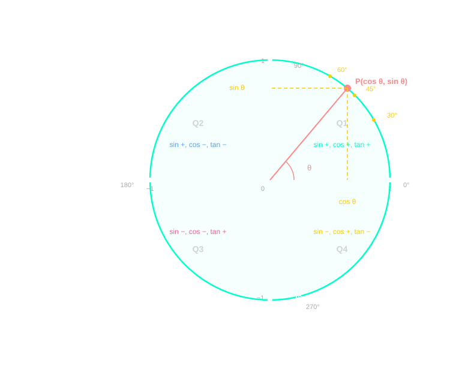
Signs of trig functions by quadrant (CAST rule):
• Q1 (0°–90°): All ratios are positive (All).
• Q2 (90°–180°): Only sine is positive (Sine).
• Q3 (180°–270°): Only tangent is positive (Tangent).
• Q4 (270°–360°): Only cosine is positive (Cosine).
Reference Angles
A reference angle is the acute angle (between 0° and 90°) formed between the terminal side of a given angle and the x-axis. It is always positive and always ≤ 90°. The trig ratio of any angle equals ±(the same trig ratio of its reference angle), with the sign determined by the quadrant.
| Quadrant | Angle θ range | Reference angle α | Example |
|---|---|---|---|
| Q1 | 0° – 90° | α = θ | θ = 40° → α = 40° |
| Q2 | 90° – 180° | α = 180° − θ | θ = 130° → α = 50° |
| Q3 | 180° – 270° | α = θ − 180° | θ = 210° → α = 30° |
| Q4 | 270° – 360° | α = 360° − θ | θ = 310° → α = 50° |
Using Reference Angles for Complementary, Supplementary and Reflex Angles
Complementary (add to 90°):
sin 70° = cos 20° → reference angle is 20° for both.
Supplementary (add to 180°):
sin 150° = sin 30° = 0.5 (same sine, different quadrant)
cos 150° = −cos 30° = −√3/2 (cosine changes sign in Q2)
Reflex angles (180°–360°):
sin 210° = −sin 30° = −0.5 (Q3: sine is negative)
cos 330° = cos 30° = √3/2 (Q4: cosine is positive)
Common Angles
| θ | sin θ | cos θ | tan θ |
|---|---|---|---|
| 0° | 0 | 1 | 0 |
| 30° | |||
| 45° | 1 | ||
| 60° | |||
| 90° | 1 | 0 | undefined |
Graph of y = sin θ
To plot y = sin θ, generate coordinate pairs (θ, sin θ) using key angles, then plot and join them with a smooth curve.
| θ | 0° | 30° | 60° | 90° | 120° | 150° | 180° | 210° | 270° | 330° | 360° |
|---|---|---|---|---|---|---|---|---|---|---|---|
| sin θ | 0 | 0.50 | 0.87 | 1 | 0.87 | 0.50 | 0 | −0.50 | −1 | −0.50 | 0 |
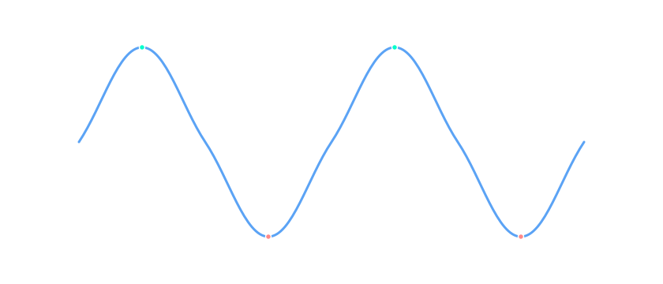
Key features of y = sin θ:
• Amplitude: 1 (maximum value 1, minimum value −1).
• Period: 360° (the pattern repeats every 360°).
• Zeros: at θ = 0°, 180°, 360°.
• Maximum: y = 1 at θ = 90°.
• Minimum: y = −1 at θ = 270°.
• Angles with the same sine: sin θ = sin(180° − θ). So sin 30° = sin 150° = 0.5.
Graph of y = cos θ
The cosine graph is generated the same way — plot coordinate pairs (θ, cos θ) and join smoothly.
| θ | 0° | 60° | 90° | 120° | 180° | 240° | 270° | 300° | 360° |
|---|---|---|---|---|---|---|---|---|---|
| cos θ | 1 | 0.50 | 0 | −0.50 | −1 | −0.50 | 0 | 0.50 | 1 |
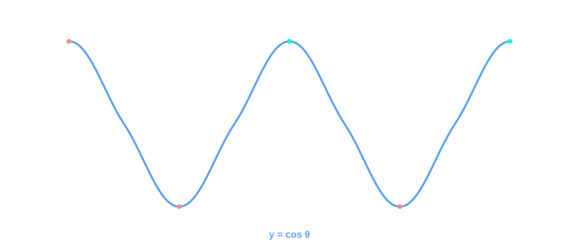
Key features of y = cos θ:
• Amplitude: 1 (maximum 1, minimum −1).
• Period: 360°.
• Zeros: at θ = 90°, 270°.
• Maximum: y = 1 at θ = 0° and 360°.
• Minimum: y = −1 at θ = 180°.
• The cosine graph is the sine graph shifted 90° to the left: cos θ = sin(θ + 90°).
• Angles with the same cosine: cos θ = cos(360° − θ). So cos 60° = cos 300° = 0.5.
Graph of y = tan θ
The tangent function is defined as . It is undefined wherever cos θ = 0 (at 90°, 270°, …), producing vertical asymptotes at those angles.
| θ | 0° | 30° | 45° | 60° | 90° | 135° | 180° | 225° | 270° | 315° | 360° |
|---|---|---|---|---|---|---|---|---|---|---|---|
| tan θ | 0 | 0.58 | 1 | 1.73 | undef. | −1 | 0 | 1 | undef. | −1 | 0 |
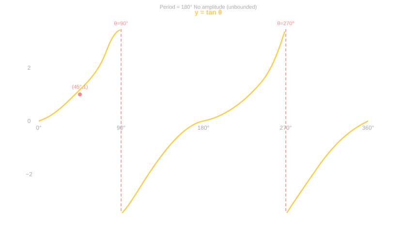
Key features of y = tan θ:
• Period: 180° (repeats every 180°, not 360°).
• No amplitude the graph is unbounded (goes to +∞ and −∞).
• Asymptotes (undefined) at θ = 90°, 270°, and every 180° thereafter.
• Zeros: at θ = 0°, 180°, 360°.
• tan 45° = 1, tan 135° = −1, tan 225° = 1, tan 315° = −1.
• Angles with the same tangent: tan θ = tan(θ + 180°). So tan 30° = tan 210°.
Comparing the Three Graphs
| Property | y = sin θ | y = cos θ | y = tan θ |
|---|---|---|---|
| Period | 360° | 360° | 180° |
| Amplitude | 1 | 1 | Unbounded |
| Maximum value | 1 at 90° | 1 at 0°, 360° | — |
| Minimum value | −1 at 270° | −1 at 180° | — |
| Zeros | 0°, 180°, 360° | 90°, 270° | 0°, 180°, 360° |
| Asymptotes | None | None | 90°, 270°, … |